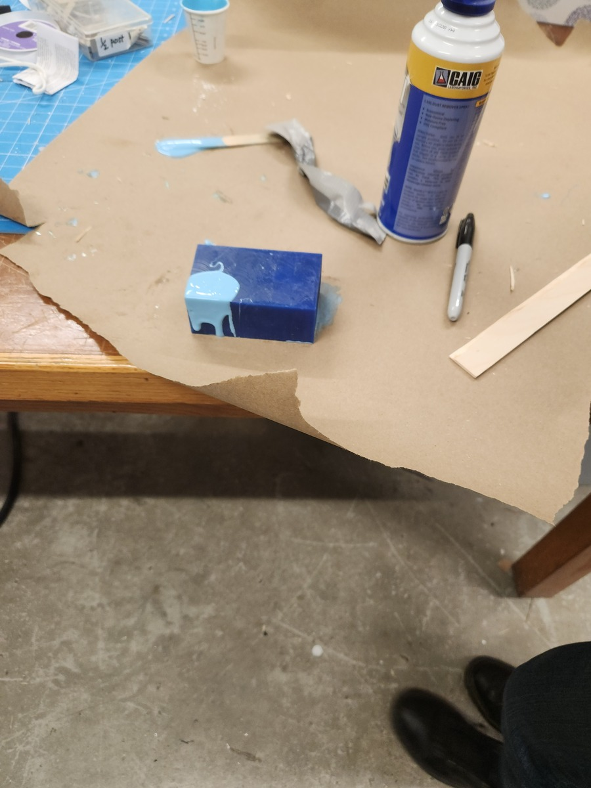

<br>
#### Week 8: cnc milling, molding, and casting
<p>
This week I learned cnc milling molding and casting
</p>
<br>
<p><storng>CNC wax mold</strong></p>
<br>
<p>
I made a wax mold of a heart engraved with my girlfriend's name. This will make a nice gift and will allow me to practice cnc and molding and casting. I designed the mold in fusion 360 and used the srm 20 to cnc it. I used a ⅛ end mill. I may have made the mold too small because the text is hard to read. To fix this in the future I would make the mold bigger or try using a smaller bit to see if it can capture the resolution of the text. Below is a gif of the milling and the design.
</p>
<img src="cnc.gif" alt="This weeks assignment"/>
<p>
After milling the mold I used the oomo to cast a negative mold of silicon and then I casted Bismuth into it to make the positive original heart that I designed. Below is pictures of that process
</p>

<br>